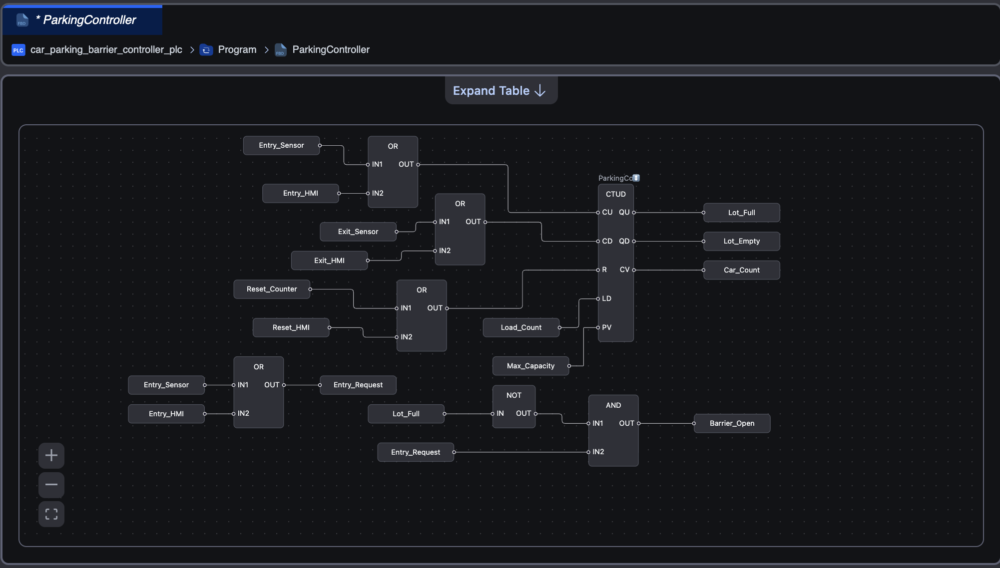

VERSION 1.0 · OPENPLC LOGIC & SIMULATION
Car Parking Lot Barrier Controller
A compact IEC 61131-3 control project that tracks parking occupancy with a CTUD counter, automatically permits vehicle entry when capacity is available, and blocks the barrier when the lot is full.

ParkingController
Function Block Diagram
PROJECT OVERVIEW
Automated capacity control for a small parking lot
The controller counts arriving and departing vehicles, evaluates available capacity, and controls the entry barrier through a simple, testable Function Block Diagram.
Occupancy Tracking
The CTUD block increments for entries and decrements for exits while maintaining the current vehicle count.
Barrier Permission
The barrier opens only when an entry request is present and the current count is below maximum capacity.
Full-Lot Protection
When the preset value is reached, the full-lot output becomes active and blocks additional entry commands.
Dual Test Inputs
Both simulated sensor inputs and HMI command inputs were validated for entry, exit, and reset operation.
CONTROL REQUIREMENTS
Core operating sequence
Detect an entry request
An entry sensor or HMI command creates a rising-edge signal for the CTUD count-up input.
Check available capacity
The barrier is permitted only while the lot-full condition remains false.
Track departures
An exit sensor or HMI command pulses the CTUD count-down input and reduces the occupancy count.
Reset the simulation
The reset path clears the CTUD current value and returns the system to the empty-lot condition.
PLC LOGIC
Function Block Diagram and variable configuration
The program combines OR logic for sensor and HMI requests, a CTUD function block for occupancy, and AND/NOT logic for barrier permission.
BARRIER CONDITION
Barrier_Open = Entry_Request AND NOT Lot_Full
Entry_Request is generated from either the physical-style entry sensor or the HMI simulation input. The lot-full signal overrides the request and keeps the barrier closed.
SIMULATION RESULTS
Validated operating scenarios
Each test was performed in the OpenPLC Online debugger using Boolean pulses and live monitoring of the CTUD outputs.
Car count is zero, the empty indicator is active, and the barrier remains closed.
A rising-edge sensor pulse opens the barrier and increments the vehicle count.
The HMI request follows the same OR path and produces the same validated entry behavior.
An exit pulse drives the CTUD count-down input and reduces occupancy by one.
The HMI exit command is validated independently from the simulated physical sensor input.
At maximum capacity, Lot_Full becomes true and the barrier permission is removed.
The reset command returns the vehicle count to zero and restores the empty-lot state.
The final build completed successfully and the PLC program entered the running state.
I/O AND VARIABLES
Key project signals
| Variable | Type | Purpose | Version 1 Role |
|---|---|---|---|
Entry_Sensor |
BOOL | Simulated entrance detector | CTUD count-up request |
Exit_Sensor |
BOOL | Simulated exit detector | CTUD count-down request |
Entry_HMI |
BOOL | Future HMI entry command | Validated through OR logic |
Exit_HMI |
BOOL | Future HMI exit command | Validated through OR logic |
Car_Count |
INT | Current parking occupancy | CTUD current value |
Lot_Full |
BOOL | Capacity reached indicator | Blocks entry barrier |
Barrier_Open |
BOOL | Entrance barrier command | Entry request AND available space |
VERSION ROADMAP
From PLC simulation to a complete HMI system
Released
v1.0.0
OpenPLC Logic and Simulation
- CTUD occupancy tracking
- Entry and exit request handling
- Capacity interlock
- Barrier control logic
- Debugger validation
- GitHub Pages case study
Planned
v2.0.0
HMI and Modbus TCP Integration
- CODESYS or FUXA visualization
- Modbus TCP communications
- Live occupancy and capacity display
- Animated barrier status
- Alarm and event indicators
- Occupancy trend visualization
PROJECT REPOSITORY
Explore the source files and project documentation
Version 1 documents the control strategy, OpenPLC implementation, debugger validation, screenshots, and deployment notes for the parking barrier controller.